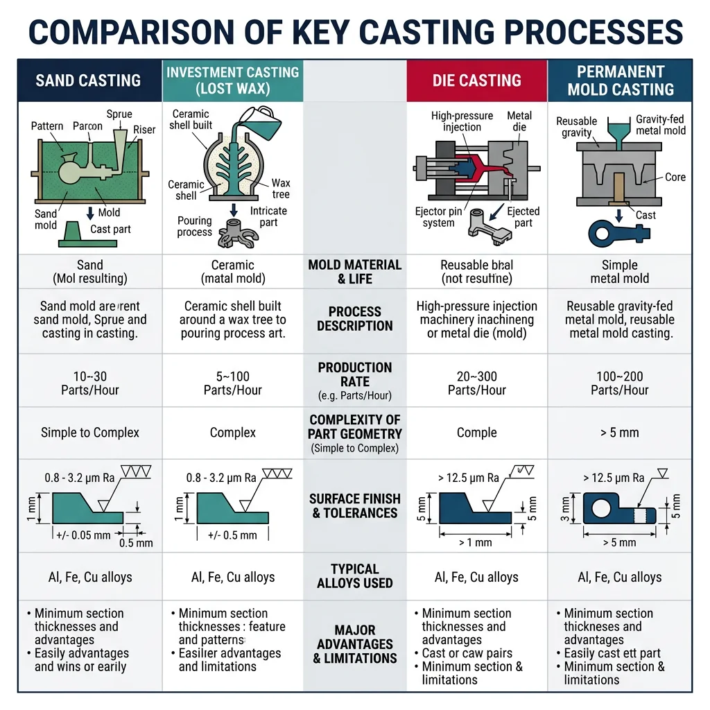
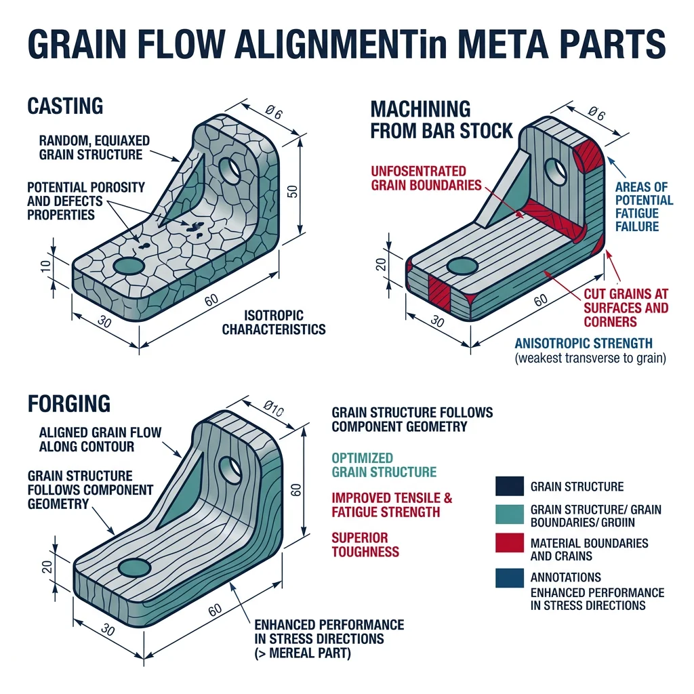
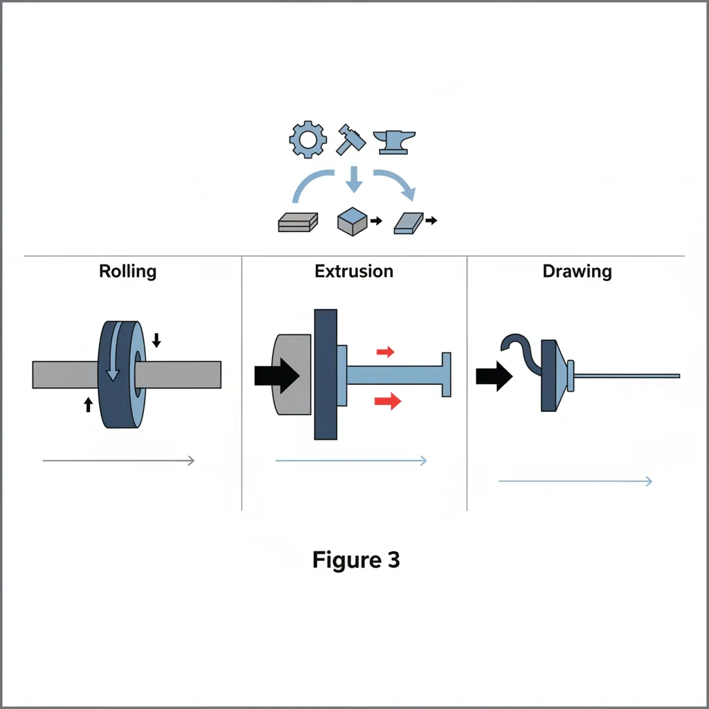
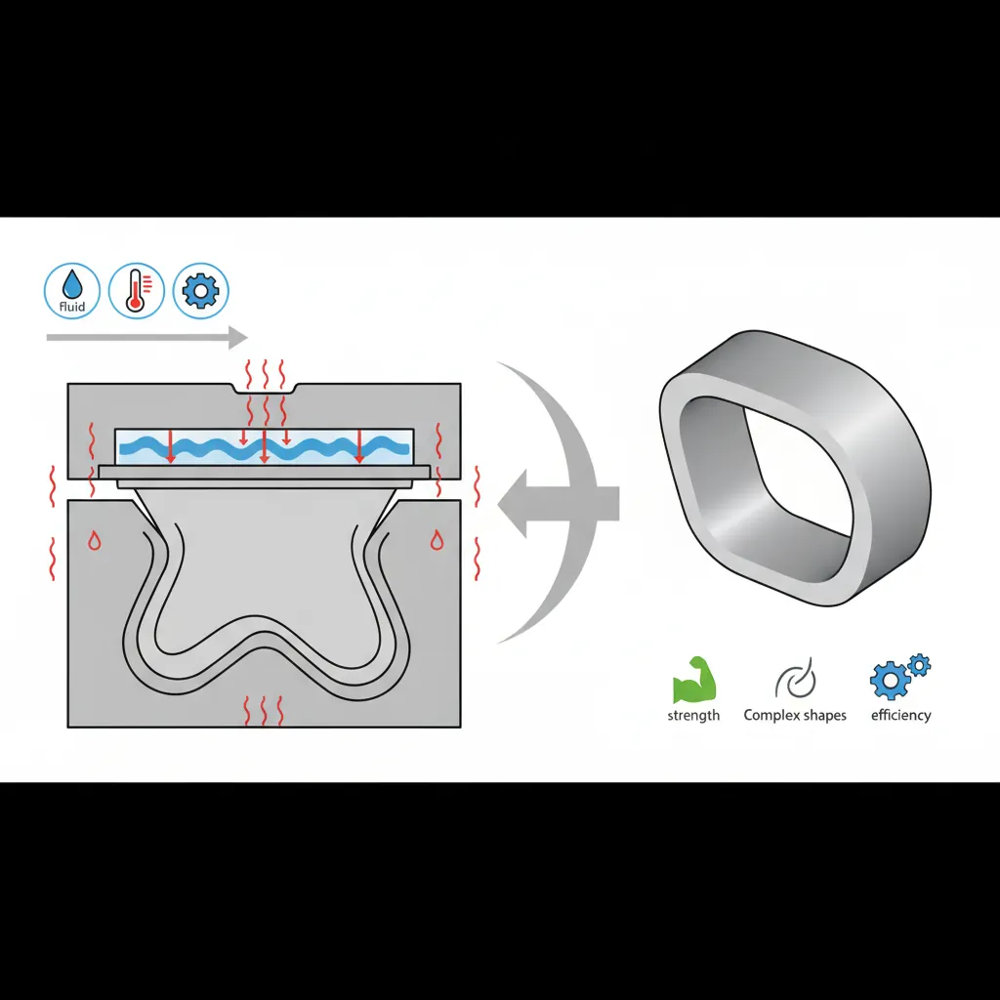

Casting Processes
Manufacturing Mastery
Manufacturing Systems & Process Foundations
Process taxonomy, physics, DFM/DFA, production economics, Theory of ConstraintsCasting, Forging & Metal Forming
Sand/investment/die casting, open/closed-die forging, rolling, extrusion, deep drawingMachining & CNC Technology
Cutting mechanics, tool materials, GD&T, multi-axis machining, high-speed machining, CAMWelding, Joining & Assembly
Arc/MIG/TIG/laser/friction stir welding, brazing, adhesive bonding, weld metallurgyAdditive Manufacturing & Hybrid Processes
PBF, DED, binder jetting, topology optimization, in-situ monitoringQuality Control, Metrology & Inspection
SPC, control charts, CMM, NDT, surface metrology, reliabilityLean Manufacturing & Operational Excellence
5S, Kaizen, VSM, JIT, Kanban, Six Sigma, OEEManufacturing Automation & Robotics
Industrial robotics, PLC, sensors, cobots, vision systems, safetyIndustry 4.0 & Smart Factories
CPS, IIoT, digital twins, predictive maintenance, MES, cloud manufacturingManufacturing Economics & Strategy
Cost modeling, capital investment, facility layout, global supply chainsSustainability & Green Manufacturing
LCA, circular economy, energy efficiency, carbon footprint reductionAdvanced & Frontier Manufacturing
Nano-manufacturing, semiconductor fabrication, bio-manufacturing, autonomous systemsCasting is humanity's oldest metalworking process — dating back 6,000 years to Mesopotamia. Today, over 70% of all manufactured goods contain at least one cast component. From engine blocks to turbine blades to hip implants, casting transforms liquid metal into complex shapes that would be impossible or uneconomical to machine from solid stock.

Sand casting is the most common casting process, producing ~60% of all castings by weight. A pattern (usually wood or metal) is pressed into sand mixed with a binder (clay or resin) to create a mold cavity. Liquid metal is poured in, solidifies, and the sand mold is broken away.
| Casting Process | Typical Metals | Tolerances | Surface Finish (Ra μm) | Typical Parts |
|---|---|---|---|---|
| Sand Casting | Iron, steel, aluminum, bronze | ±1.0 – ±3.0 mm | 6.3 – 25 | Engine blocks, pump housings, manhole covers |
| Investment (Lost-Wax) | Superalloys, titanium, steel | ±0.1 – ±0.5 mm | 1.6 – 6.3 | Turbine blades, dental crowns, jewelry |
| Die Casting | Aluminum, zinc, magnesium | ±0.05 – ±0.5 mm | 0.8 – 3.2 | Smartphone frames, automotive trim, door handles |
| Permanent Mold | Aluminum, copper alloys | ±0.25 – ±1.0 mm | 3.2 – 6.3 | Pistons, wheels, cookware |
| Centrifugal Casting | Iron, steel, copper alloys | ±0.5 – ±2.0 mm | 6.3 – 12.5 | Pipes, rings, cylinder liners |
Investment casting (lost-wax process) produces the highest-precision castings. A wax pattern is coated with ceramic slurry, the wax is melted out, and molten metal fills the ceramic shell. This process creates turbine blades for jet engines — parts that operate at 1,100°C while spinning at 10,000 RPM, with tolerances of ±0.1mm and internal cooling channels impossible to machine.
Case Study: Rolls-Royce Turbine Blade Casting
A single-crystal turbine blade for the Rolls-Royce Trent XWB engine demonstrates casting at its most extreme:
- Material: CMSX-4 nickel superalloy (melting point ~1,350°C, operating at 1,150°C)
- Process: Investment casting with directional solidification — a "crystal selector" pig-tail ensures the entire blade is one continuous crystal lattice with no grain boundaries
- Internal features: Complex cooling channels (0.5mm diameter) allow compressed air to flow through the blade, keeping it below melting point while gas temperatures reach 1,700°C
- Rejection rate: Up to 50% of blades are scrapped during inspection — each blade costs ~$10,000
- Why casting? No machining process can create internal cooling channels this complex. No forging process can achieve single-crystal microstructure.
Die Casting & Permanent Mold
Die casting injects molten metal at high pressure (10–175 MPa) into reusable steel molds (dies). It's the fastest casting process — cycle times of 30-90 seconds — making it ideal for high-volume production of thin-walled, dimensionally precise parts.
Hot Chamber Die Casting
Metal is melted in a furnace attached to the machine. A gooseneck mechanism injects metal directly. Used for zinc, tin, lead (low melting point metals). Cycle time: 15-30 seconds. The injection mechanism is submerged in the molten metal pool.
Cold Chamber Die Casting
Metal is melted separately and ladled into the shot chamber for each cycle. Required for aluminum, magnesium, copper (which would attack the injection mechanism). Cycle time: 30-90 seconds. Used for automotive and electronics housings.
Case Study: Tesla's Giga Press — Megacasting Revolution
Tesla's "Giga Press" (6,000-9,000 ton clamping force) represents the largest die casting operation in automotive history:
- Before: The Model 3 rear underbody used 70 stamped steel parts, bonded and riveted together, requiring multiple robots and dozens of welds
- After: The Model Y rear underbody is a single aluminum die casting — one shot, one part, cycle time ~90 seconds
- Results: 40% cost reduction, 10% weight reduction, 300+ welds eliminated, assembly time from hours to minutes
- Challenge: No weld repairs possible on single-piece castings — quality must be perfect on every shot
Industry Impact: Toyota, Volvo, Hyundai, and BMW have all announced megacasting programs following Tesla's lead.
Solidification Defects & Mold Design
Understanding solidification is crucial because most casting defects originate during the liquid-to-solid transition. As metal cools, it shrinks (typically 2-7% by volume), potentially creating voids, porosity, and residual stresses.
| Defect | Cause | Prevention | Detection |
|---|---|---|---|
| Shrinkage porosity | Insufficient liquid feed during solidification | Proper riser design, directional solidification, chills | X-ray, CT scan, sectioning |
| Gas porosity | Dissolved gases (H₂ in aluminum) expelled during solidification | Degassing, vacuum casting, proper gating | X-ray, density testing |
| Hot tears | Thermal stresses exceed strength during solidification | Reduce restraint, uniform wall thickness, hot spots | Visual, dye penetrant |
| Cold shuts | Two metal flow fronts meet but don't fuse (too cold) | Higher pouring temperature, better gating design | Visual, ultrasonic |
| Misruns | Metal solidifies before filling the entire mold cavity | Higher superheat, larger gates, thinner sections redesigned | Visual inspection |
import numpy as np
# Chvorinov's Rule: Calculate solidification time for various geometries
# t = B * (V/A)^2
# Mold constant B (depends on mold and metal)
B_sand_aluminum = 3.5 # min/cm² for aluminum in sand mold
B_sand_steel = 2.0 # min/cm² for steel in sand mold
B_metal_aluminum = 1.2 # min/cm² for aluminum in metal mold
shapes = {
"Cube 10cm": {"V": 10**3, "A": 6 * 10**2},
"Sphere Ø10cm": {"V": (4/3) * np.pi * 5**3, "A": 4 * np.pi * 5**2},
"Cylinder Ø10×10cm": {"V": np.pi * 5**2 * 10, "A": 2*np.pi*5**2 + 2*np.pi*5*10},
"Plate 20×20×2cm": {"V": 20*20*2, "A": 2*20*20 + 4*20*2},
}
print("Chvorinov's Rule - Solidification Time Analysis")
print("=" * 70)
print(f"{'Shape':<22} {'V(cm³)':<10} {'A(cm²)':<10} {'V/A(cm)':<10} {'t_sand(min)':<12}")
print("-" * 70)
for name, dims in shapes.items():
ratio = dims["V"] / dims["A"]
t = B_sand_aluminum * ratio**2
print(f"{name:<22} {dims['V']:<10.1f} {dims['A']:<10.1f} {ratio:<10.3f} {t:<12.2f}")
print(f"\nKey Insight: The sphere has the highest V/A ratio and solidifies LAST.")
print(f"The plate has the lowest V/A ratio and solidifies FIRST.")
print(f"Design risers to be spherical (slow to solidify) to feed castings longer.")
Forging Processes
Forging shapes metal through controlled compressive forces — hammers, presses, or rolls apply pressure to plastically deform the workpiece into the desired shape. Unlike casting, forging does not melt the metal — it works the material in its solid state, producing parts with superior mechanical properties due to refined grain structure and favorable grain flow.

| Forging Type | Die Configuration | Force (tons) | Typical Parts | Grain Flow |
|---|---|---|---|---|
| Open-Die (smith) | Flat dies, simple shapes | 100 – 10,000 | Shafts, rings, discs, bars | Controlled by operator technique |
| Closed-Die (impression) | Shaped die cavities | 500 – 50,000 | Crankshafts, connecting rods, gears | Follows die contour |
| Flashless (precision) | Completely enclosed cavity | 1,000 – 80,000 | Turbine discs, aircraft fittings | Optimized for part geometry |
| Roll Forging | Shaped rotating dies | Continuous | Axles, leaf springs, tapered shafts | Longitudinal alignment |
Grain Flow & Residual Stresses
Grain flow is the single most important advantage of forging over casting and machining. When metal is forged, the grain boundaries align along the contour of the part — like wood grain following the shape of a tree branch. This alignment creates a part that is strongest in the direction of primary loading.
Case Study: Forged vs Cast vs Machined Crankshaft
A crankshaft illustrates why grain flow matters:
- Cast crankshaft: Random grain orientation. Fatigue life ~100,000 cycles. Used in economy cars and low-stress applications.
- Forged crankshaft: Grain flows along the crank arms and journal surfaces. Fatigue life ~1,000,000+ cycles. Used in high-performance engines and trucks.
- Machined from billet: Grain flow is interrupted at every machined surface (grains are "cut"). Fatigue life 200,000–500,000 cycles. Weight penalty from oversized starting billet.
Real-World Result: Formula 1 engines use forged crankshafts operating at 15,000+ RPM. The grain flow alignment is verified via macro-etch testing on every production crankshaft in aerospace and racing applications.
Precision & Isothermal Forging
Isothermal forging maintains the workpiece and dies at the same elevated temperature throughout the process. This eliminates die chilling (where metal in contact with cooler dies becomes harder and harder to deform), enabling forging of difficult materials like titanium and nickel superalloys with much lower forces and better dimensional control.
Titanium alloys (Ti-6Al-4V) are forged at 850-950°C — but at these temperatures, titanium reacts with oxygen, forming a hard, brittle "alpha case" surface layer that must be chemically milled away (adding $50-200/part). Isothermal forging in vacuum or inert atmosphere eliminates this problem but requires specialized molybdenum alloy dies that cost $200,000-500,000. Only economically viable for aerospace production runs of 500+ parts.
import numpy as np
# Forging Force Estimation for Closed-Die Forging
# Using the forging load equation: F = k * sigma_f * A_projected
# Material flow stresses at forging temperature
materials = {
"Aluminum 6061 (450°C)": {"sigma_f": 30, "k": 6}, # MPa, complexity factor
"Steel 4340 (1100°C)": {"sigma_f": 100, "k": 8},
"Ti-6Al-4V (950°C)": {"sigma_f": 200, "k": 10},
"Inconel 718 (1050°C)": {"sigma_f": 350, "k": 12},
}
# Part: connecting rod (projected area = 80 cm² = 8000 mm²)
A_projected = 8000 # mm²
print("Closed-Die Forging Force Estimation")
print("=" * 65)
print(f"Part: Connecting Rod (projected area = {A_projected} mm²)")
print(f"\n{'Material':<28} {'σf (MPa)':<12} {'k':<6} {'Force (kN)':<12} {'Force (ton)':<12}")
print("-" * 65)
for name, props in materials.items():
F = props["k"] * props["sigma_f"] * A_projected / 1000 # kN
F_ton = F / 9.81 # metric tons
print(f"{name:<28} {props['sigma_f']:<12} {props['k']:<6} {F:<12.0f} {F_ton:<12.0f}")
print(f"\nConclusion: Titanium and superalloys require 5-10× more force than aluminum.")
print(f"Press selection: Use the next standard press size above the calculated force.")
Bulk & Sheet Metal Forming
Bulk forming processes — rolling, extrusion, and drawing — transform metal billets into long products with uniform cross-sections. These are the highest-volume forming operations in the world: over 1 billion tons of steel are hot-rolled annually, and aluminum extrusion produces everything from window frames to heat sinks to bicycle frames.

Rolling passes metal between rotating rolls to reduce its cross-section. Hot rolling (above recrystallization temperature) produces slabs, plates, bars, and structural shapes. Cold rolling (below recrystallization temperature) produces precise sheet, strip, and foil with excellent surface finish and tight tolerances.
Extrusion forces metal through a shaped die opening, producing continuous profiles of virtually any cross-section. Think of it like squeezing toothpaste — the material takes the shape of the opening.
import numpy as np
# Rolling Force Calculation (Simplified)
# Using the Slab Method: F = L * w * sigma_avg * Q
# Hot rolling parameters for steel strip
w = 1200 # Strip width (mm)
h0 = 25 # Entry thickness (mm)
h1 = 20 # Exit thickness (mm)
R = 300 # Roll radius (mm)
sigma_f = 150 # Flow stress at temperature (MPa)
mu = 0.3 # Friction coefficient (hot rolling)
# Draft and contact length
delta_h = h0 - h1 # Draft (mm)
L = np.sqrt(R * delta_h) # Projected contact length (mm)
# Average flow stress with friction hill
Q = 1 + (mu * L) / (2 * (h0 + h1) / 2) # Friction multiplier
# Rolling force
F = L * w * sigma_f * Q / 1000 # kN
# Rolling torque (per roll)
T = F * L / 2 # kN⋅mm
# Rolling power (per roll)
N_rpm = 60 # Roll speed (RPM)
omega = 2 * np.pi * N_rpm / 60 # rad/s
P = 2 * T * omega / (1000 * 1000) # MW (both rolls)
# Extrusion ratio calculation
D0 = 200 # Billet diameter (mm)
D1 = 50 # Extrusion diameter (mm)
A0 = np.pi / 4 * D0**2
A1 = np.pi / 4 * D1**2
R_extrusion = A0 / A1
epsilon = np.log(R_extrusion)
print("Rolling & Extrusion Analysis")
print("=" * 55)
print(f"\n--- Hot Rolling: Steel Strip ---")
print(f"Draft: {delta_h} mm ({h0}→{h1} mm)")
print(f"Contact length: {L:.1f} mm")
print(f"Friction factor Q: {Q:.3f}")
print(f"Rolling force: {F:.0f} kN ({F/9.81:.0f} tons)")
print(f"Torque (per roll): {T:.0f} kN⋅mm")
print(f"Total power: {P:.3f} MW")
print(f"\n--- Direct Extrusion ---")
print(f"Extrusion ratio: {R_extrusion:.1f}:1")
print(f"True strain: {epsilon:.3f}")
print(f"Ram force: {sigma_f * A0 * epsilon / 1000:.0f} kN (ideal)")
Deep Drawing & Sheet Metal Forming
Deep drawing transforms flat sheet metal into hollow, three-dimensional shapes — beverage cans, kitchen sinks, automotive body panels, and artillery shell casings. The sheet is held by a blank holder and pushed into a die cavity by a punch.
The critical parameter is the Limiting Drawing Ratio (LDR) — the maximum ratio of blank diameter to punch diameter that can be drawn without tearing. For most steels, LDR ≈ 2.0-2.3, meaning a 200mm blank can be drawn into a cup with a ~90mm diameter in a single operation. Deeper cups require multiple redraws with intermediate annealing.
Case Study: Aluminum Beverage Can Manufacturing
The aluminum beverage can is the most manufactured metal container on Earth — ~100 billion cans per year:
- Step 1 — Cupping: A 140mm diameter disc is blanked from 0.3mm aluminum coil and deep-drawn into a shallow cup (~88mm diameter)
- Step 2 — Ironing: The cup is ironed (wall thickness reduced from 0.3mm to 0.1mm) through 3 progressively tighter rings, elongating to 122mm height
- Step 3 — Doming: Bottom is domed inward for pressure resistance
- Step 4 — Trimming, washing, printing, necking, flanging
- Speed: Modern can lines produce 2,400 cans per minute (~40 cans/second)
- Material: Each can weighs only 14.9g — the wall is thinner than a human hair (0.1mm)
Hydroforming & Superplastic Forming
Hydroforming uses high-pressure fluid (typically 70-400 MPa water) to form sheet or tube into complex shapes against a single die. Unlike conventional stamping (which requires matched punch and die), hydroforming needs only one hard tool — the fluid acts as a universal "soft punch."

Superplastic forming (SPF) exploits the superplastic behavior of certain fine-grained alloys (notably Ti-6Al-4V and Al-Mg alloys) at elevated temperatures. These materials can achieve elongations of 200-2000% — similar to stretching chewing gum — enabling extremely complex shapes in a single operation.
Advanced & Frontier Forming
The forefront of metal forming combines digital design tools, flexible forming processes, and additive manufacturing to eliminate the need for expensive dedicated tooling. These technologies are transforming metal forming from a high-volume-only proposition into an economically viable option for prototyping and low-volume production.
Simulation-Driven Die Design
Finite Element Analysis (FEA) simulation has revolutionized die design. Instead of building and testing physical dies through expensive trial-and-error ($50,000-500,000 per die iteration), engineers simulate the entire forming process digitally — predicting material flow, thinning, wrinkling, springback, and residual stresses before any steel is cut.
Industry Application: FEA in Sheet Metal Stamping
Major automotive OEMs (BMW, Toyota, VW) use forming simulation at every stage:
- Feasibility: Can this part be stamped? Where will splits and wrinkles occur? (1-hour simulation vs 2-week physical trial)
- Springback compensation: The die is deliberately "over-bent" so the part springs back to the correct shape — simulation predicts the exact compensation needed
- Blank optimization: Nesting and blank shape optimization reduce material waste by 5-15% on every coil
- Software: AutoForm, LS-DYNA, PAMSTAMP, DEFORM are industry-standard tools
ROI: Simulation reduces die tryout time by 50-70% and eliminates 2-3 physical die iterations ($100K-300K savings per die set).
Additive-Assisted Forming
Incremental Sheet Forming (ISF) is a dieless forming process where a CNC-controlled tool progressively deforms sheet metal into a 3D shape. Think of it as "3D printing in reverse" — instead of adding material, a stylus progressively pushes sheet metal into shape, one layer at a time.
ISF eliminates the need for matched dies entirely, making it economically viable for prototypes and production runs under 500 parts. Combined with 3D-printed tooling inserts for specific features, hybrid approaches are emerging that blend the flexibility of additive manufacturing with the speed of traditional forming.